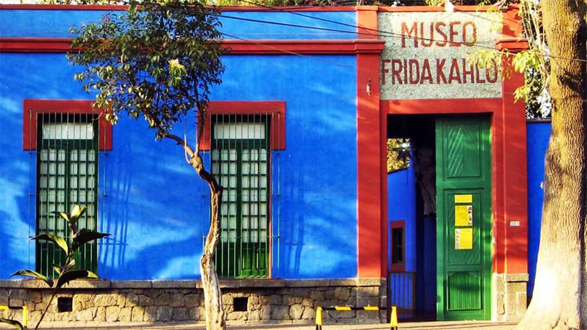

Turismo
El centro histórico es el corazón de la Ciudad de México, capital cultural de América, el lugar donde todo comenzó y donde se fusiona armónicamente lo antiguo con lo moderno, el pasado con el presente y lo políticamente correcto con lo irreverente.
Con un gran legado de vestigios prehispánicos y edificios legendarios, es un sitio que está más vivo que nunca, ofreciendo un sinfín de atractivos para toda persona que lo visita.
Más allá de su fascinante arquitectura colonial, de sus rincones que han visto pasar algunos de los acontecimientos más importantes de la historia de México; de su invaluable oferta museística; y de su espléndida propuesta gastronómica, encontrarás un centro histórico vivo donde a diario convergen mundos distintos: religión, política, negocios, comercio, turismo, pueblos originarios… Es la zona donde mejor se conjuga la identidad mexicana, donde se atestigua el esplendor del pasado, la diversidad del presente y la esperanza del futuro.
Casa Azul
Coyoacán también es conocido por ser el hogar de un gran número de artistas e intelectuales mexicanos y extranjeros. Una de sus residentes más famosas ha sido Frida Kahlo, quien nació, vivió una parte de su vida y murió en la llamada Casa Azul, hoy Museo Frida Kahlo, orgullo y emblema de la ciudad. A unos cuantos pasos encontrarás el Museo Casa de León Trotsky.